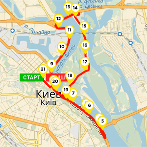

Дистанція10 км
Дистанція350 грн
Дистанція5 000
Дистанція15-18 років
Дистанція5 473
Що включає пакет
Стартовий номер учасника, електронний чіп для реєстрації результату,медаль фінішера (за бажанням),рюкзак тканевий,іміджевий магніт заходу,роздягальні і камери схову, пункти харчування: 5, 10, 15 км і на фініші,карта маршруту, гід учасника, онлайн диплом з результатом (доступний з 30 травня), спеціальні пропозиції від наших партнерів, музична підтримка на трасі.
Умови допуску
Допуск учасників до змагань здійснюється за наявності документів, що надаються до Мандатної комісії при отриманні стартового пакета учасника:
- • посвідчення особи, що підтверджує вік учасника (обов'язково для всіх учасників);
- • медична довідка;
- • оригінал заповненого бланку «Виключення відповідальності», обов'язково для всіх учасників.
Маршрут забігу
